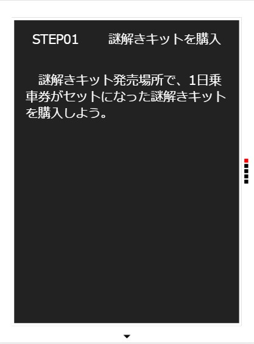

クライアント情報
- クライアント：鉄道会社。
- 目的：謎解きゲームを通して、普段利用が少ない駅を利用してもらう。
- ペルソナ：3０代。男性。謎解き好きで、ブログに体験談を載せている。運動は苦手。
- ペルソナを導く流れ：ネットで体験談を検索する。
- 流入フロー：スマホもしくはタブレット。
コンテンツアイデア
ワクワク感を出すデザイン
設定したペルソナ像から『没入感』『操作性』をキーワードとして出し、スマホやタブレットで見ることを想定して画面回転対応可能なcssアニメーションを使用したサイトを作成しました。
各ページの解説
- 作業テーマ
画面回転に合わせる - どんな技術を
使ったか
cssアニメーションを使用してワクワク感を演出したり、ウインドウサイズにフィットするようにjQueryでコンテンツの大きさなどを制御した - なぜ？
没入感を深め、ゲーム感を出す為 - 作業環境
Windows・
Visual Studio Code

TOPページ
- デザインのポイント
ノンスクロールの1画面完結のデザイン - 工夫した点
1：cssアニメーション終了後にサイトトップを自動で出す
2：cssアニメーションを二つつなげる
3：四辺に沿ったメニューバーの設置
4：cssアニメーションをスキップするボタンの実装
5：画面回転に対応させるため、jQueryで制御
- 作業テーマ
わかりやすく楽しく情報を伝える - どんな技術を
使ったか
cssアニメーションを使用 - なぜ？
動きをつけて遊び心を刺激する - 作業環境
Windows・
Visual Studio Code

趣旨紹介ページ
- デザインのポイント
1画面で完結するページ - 工夫した点
1：文字が躍るcssアニメーションの実装
2：映画風cssアニメーションで没入感を高める演出
3：TOPへ戻るボタンや文字の位置
- 作業テーマ
可変式スライダーの実装 - どんな技術を
使ったか
可変式スライダーの実装 - なぜ？
わかりやすく、見やすくするため - 作業環境
Windows・
Visual Studio Code

遊び方紹介ページ
- デザインのポイント
操作性とわかりやすさの両立 - 工夫した点
1：ウインドウサイズにフィットするスライダーの実装
2：文字が躍るcssアニメーションの実装
3：ボタンや文字の位置
- 作業テーマ
見やすいコンテンツの配置 - どんな技術を
使ったか
可変式スライダーの実装 - なぜ？
操作性をあげるため - 作業環境
Windows・
Visual Studio Code

お試し謎のページ
- デザインのポイント
読みやすく印象的に - 工夫した点
1：ウインドウサイズにフィットするスライダーの実装
2：文字が躍るcssアニメーションの実装
3：ボタンや文字、画像の位置や大きさの可変
- 作業テーマ
細かいアニメーションの調整 - どんな技術を
使ったか
映画風cssアニメーションを実装 - なぜ？
長い説明部分を飽きずに印象的にするため - 作業環境
Windows・
Visual Studio Code

キット購入方法のページ
- デザインのポイント
読みやすく印象的に - 工夫した点
1：ウインドウサイズにフィットするスライダーの実装
2：文字が躍るcssアニメーションの実装
3：ボタンや文字の位置の可変
4：アニメーションの長さと文章量の調整
その他の制作物